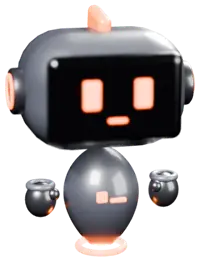

01
01
KI-Agenten & OpenClaw
Assistenten und Agents, die Wissen und Werkzeuge verbinden.
Moellenbeck-Digital baut Software, Automatisierung und KI-Agenten. Unsere Agenten bereiten vor – entscheiden tut ein Mensch.
Wasserschaden, 7:12 Uhr. Sechs Stationen – von der Meldung bis zur Freigabe.
01
Assistenten und Agents, die Wissen und Werkzeuge verbinden.
 02
02
Wiederkehrende Abläufe als BPMN-Workflows – mit Prüfung und Freigabe.
 03
03
Webapps, mobile Apps, interne Tools und APIs – bis ins Deployment.
 04
04
Selbst gehostete Infrastruktur für Teams, die ihre Daten selbst kontrollieren.

Unsere Produkte teilen einen Kern: Agenten bereiten vor, ein Mensch gibt frei.
Agenten-Teams auf OpenClaw übernehmen Eingang, Recherche und Entwürfe. Nichts geht raus ohne Freigabe eines Menschen.
Einen Ablauf in normaler Sprache beschreiben, statt ihn zu programmieren. Daraus entsteht ein Prozessmodell. Agenten arbeiten die Schritte ab, der Mensch entscheidet.
Mehr erfahrenKI-Mitarbeiter für feste Aufgaben. Beispiel Hausverwaltung: liest den Eingang, erkennt Notfälle, bereitet Maßnahmen mit Quellen vor. Raus geht nur, was ein Mensch freigibt.
Mehr zur HausverwaltungAuf die Warteliste# fundstück.md
Du hast den versteckten Knoten gefunden.
Jede Notiz ist ein Ast – auch diese.
Markdown-Notizen werden zu Mindmaps – eine Wissensbasis, die Menschen lesen und Agenten per MCP pflegen.
bloommd.ioVerbindet Geräte direkt über WireGuard, auch hinter NAT – mit einem Koordinationsserver, den du selbst betreibst.
wave-mesh.org// Referenz: Anipal – Tiergesundheit für Tierbesitzer und Praxen, geleitet von Max Möllenbeck.
Hält Menschen, Themen und Abläufe zusammen. Kümmert sich als CEO um Organisation und Administration. Fitnesstrainerin und Sportmanagement-Studentin.
Entwickelt Software und macht komplexe Technik verständlich. Fokus auf Automatisierung, KI und OpenClaw.
Leitet anipal.io und bringt technische Ideen schnell in echte Produkte. TypeScript, iOS, React und Supabase – mit Fokus auf AI.
Plus ein Team aus KI-Agenten. Sie bauen, testen und prüfen mit uns. Jede Freigabe trifft ein Mensch.
// Schreiben Sie uns. Beim Senden öffnet sich Ihr E-Mail-Programm mit einer fertigen Nachricht an admin@
| Unternehmen | Moellenbeck-Digital UG (haftungsbeschränkt) |
|---|---|
| Sitz | Gelsenkirchen, laut Impressum |
| Leistungen | Software, Automatisierung und KI-Agenten. Digital & Remote. |
| Prinzip | Agenten bereiten vor, ein Mensch gibt frei. |
| Kontakt | admin@ |
| Produkt | Was es tut | Einordnung |
|---|---|---|
| Agentische Infrastruktur | Agenten-Teams auf OpenClaw übernehmen Eingang, Recherche und Entwürfe. | Kern · in Betrieb |
| MD_Process | Einen Ablauf in normaler Sprache beschreiben, statt ihn zu programmieren. | Prozesse mit Agenten |
| KI-Mitarbeiter für Hausverwaltungen | Liest den Eingang, erkennt Notfälle, bereitet Maßnahmen mit Quellen vor. | Pilotphase startet bald |
| BloomMD | Markdown-Notizen werden zu Mindmaps. | Wissen für Menschen und Agenten |
| wave-mesh | Verbindet Geräte direkt über WireGuard, auch hinter NAT. | Sichere Vernetzung |
Zu Leistungen, Produkten und der Zusammenarbeit.
Ihre Frage ist noch offen? Schreiben Sie uns.Moellenbeck-Digital baut Software, Automatisierung und KI-Agenten.
Unsere Agenten bereiten vor – entscheiden tut ein Mensch.
Einen Ablauf in normaler Sprache beschreiben, statt ihn zu programmieren. Daraus entsteht ein Prozessmodell. Agenten arbeiten die Schritte ab, der Mensch entscheidet.
KI-Mitarbeiter übernehmen feste Aufgaben. Beispiel Hausverwaltung: Der KI-Mitarbeiter liest den Eingang, erkennt Notfälle und bereitet Maßnahmen mit Quellen vor. Pilotphase startet bald. Außer der Standardantwort geht ohne Freigabe nichts raus.
BloomMD macht Markdown-Notizen zu Mindmaps – eine Wissensbasis, die Menschen lesen und Agenten per MCP pflegen.
wave-mesh verbindet Geräte direkt über WireGuard, auch hinter NAT – mit einem Koordinationsserver, den du selbst betreibst.
Schreiben Sie uns an admin@
Zuletzt aktualisiert: